Contents
- Train an L^3 camera
- Load scene to capture with camera
- Perform optics and sensor simulation
- Move deeper in the code to more L^3 specific functions
- Show CFA and RAW image
- Show Patch Types
- Load and show patches from RAW image
- Find patch luminance for each patch
- Find closest patch luminance from trained set for each patch
- Global Linear Pipeline (simpler alternative to full L^3 pipeline)
- Divide patches into flat and texture
- 1. Calculate the mean in each color channel
- 2. Subtract the mean from each pixel with the corresponding color
- 3. Find patch contrast by summing 0 mean patch with abs value
- 4. Compare patch contrast to threshold. If contrast<threshold, patch is flat. If contrast>threshold, patch is texture.
- Apply filters to flat patches
- Flip texture patches into canonical form
- Cluster texture patches
- Apply filters to texture patches
- Calculate final output images
- Show which of the trained patch luminance values used at each pixel
- Calculate ideal XYZ image
- Crop black border from all images
- Scale lrgb result images
- Convert lrgb to srgb
- Show the sRGB results
- Default ISET pipeline result
% The following script explains how the L^3 pipeline is applied to a RAW % image from a sensor with an arbitrary CFA pattern. % The results of the training process, such as filters, are shown. The % calculations required to perform the training are not described but can % be viewed in L3Train.m. % The following code is taken from s_L3render and the functions that are % subsequently called. There have been slight modifications as needed % and the plotting code has been added. Indentations correspond with which % m files the code was taken from.
Train an L^3 camera
s_L3TrainCamera clearvars ** -except camera %clear workspace except for camera
Load scene to capture with camera
scene = sceneFromFile('StuffedAnimals_tungsten-hdrs','multispectral'); meanLuminance = 600; fovScene = 10; scene = sceneSet(scene,'hfov',fovScene); scene = sceneAdjustLuminance(scene,meanLuminance); % Adjust FOV of camera to match scene camera = cameraSet(camera,'sensor fov',fovScene);
Reading multispectral data with mcCOEF. Saved using svd method
Perform optics and sensor simulation
Following is in cameraCompute, which is called using the following line: camera = cameraCompute(camera,scene);
oi = cameraGet(camera,'oi'); sensor = cameraGet(camera,'sensor'); vci = cameraGet(camera,'vci'); oi = oiCompute(oi,scene); sensor = sensorCompute(sensor,oi);
Move deeper in the code to more L^3 specific functions
Following is in vcimageCompute, which is called using the followign line:
% vci = vcimageCompute(vci,sensor); L3 = imageGet(vci,'L3'); % Following is in L3render, which is called using the following line: % [resultL3,lumIdx] = L3render(L3,sensor,'local');
Show CFA and RAW image
The CFA pattern is visible in the RAW image. Here the RAW image is drawn as a monochrome image although the measurement at each pixel has an associated color.
The 2x2 RGBW CFA is used in this example.
% RAW sensor image inputIm = sensorGet(sensor,'volts'); vcNewGraphWin; imagesc(inputIm/max(inputIm(:))); colormap(gray) sz = sensorGet(sensor,'size'); title('RAW sensor image') % RGBW CFA L3plot(L3,'cfa full'); title('RGBW CFA') % Spectral sensitivities wave = sensorGet(sensor,'wave'); sensitivities = sensorGet(sensor,'spectral QE'); figure; hold on plotcolors='rgbk'; for colornum=1:4 plot(wave,sensitivities(:,colornum),plotcolors(colornum)) end xlabel('Wavelength (nm)'); title('Spectral Sensitivities')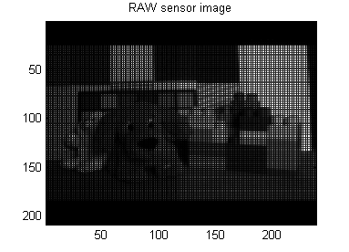 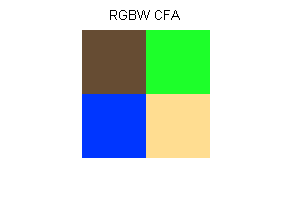 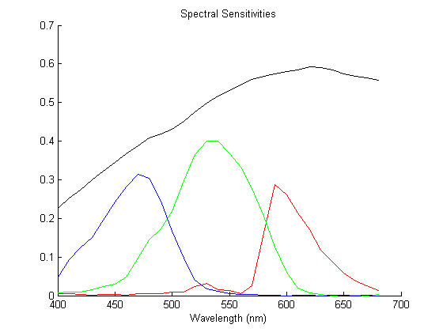
Show Patch Types
L^3 is a patch based algorithm. The output at each pixel is a function only of a set of nearby pixels in the input RAW image.
Here a patch is a 5x5 square of pixels centered at the pixel where we want to calculate the output. Since the CFA is a 2x2 pattern, there are 4 types of pixels (RGB and W), which could be at the center of a patch. Therefore, we have the following four types of patches.
Different filters have been trained for each patch type. We will build the output image by iterating through each patch type and using the appropriate filters.
warning('off') %#ok<*WNOFF> %needed because of CFA/data mismatch for patchtyperow=1:2 for patchtypecol=1:2 L3plot(L3,'block pattern',[patchtyperow,patchtypecol]); title(['Patch Type ',num2str(patchtyperow),', '... ,num2str(patchtypecol)]) end end warning('on') %#ok<*WNON>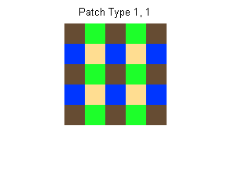
 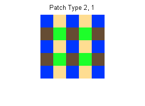 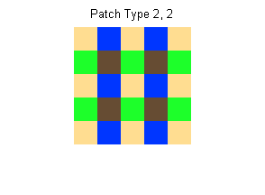
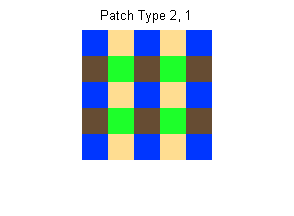 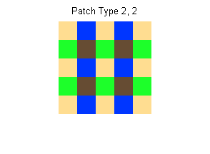 Load and show patches from RAW image
All patches of a particular patch type are loaded at the same time.
% For rest of this article, just consider patch type 1,1 that has a % center R pixel. Normally all patch types are looped over. rr=1; cc=1; L3 = L3Set(L3,'patch type',[rr,cc]); % Load all patches of this cfa position from RAW image inputPatches = L3sensor2Patches(L3,inputIm); % Patches are stored as a matrix where each vectorized patch is % stored in a row. % Size of this matrix: number of pixels in a patch x number of % R pixels in the RAW image. (The border of the image is ignored % when a patch cannot fit so this number is slightly off.) patchesSize = size(inputPatches) indices=ceil(rand(1,25)*size(inputPatches,2)/2); %randomly pick 25 L3 = L3Set(L3,'sensor patches', inputPatches); L3plotpatches(L3,indices,5,5); title('Some of the Input Patches of Type 1,1')
patchesSize =
25 11934
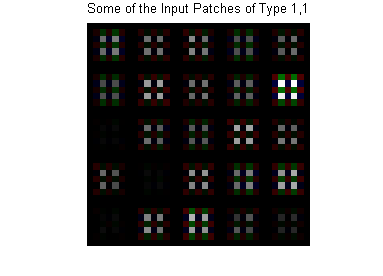 Find patch luminance for each patch
Since light level significantly alters the amount of noise in the measurements, the L^3 algorithm adapts to the local light level.
The local light level for patch is called its patch luminance. The patch luminance is a weighted average of the RAW voltage values and is calculated by: 1. Finding the average color across the patch for each CFA color 2. Averaging the numbers in (1). This calculation is performed by applying the luminance filter using an inner product.
% Following is in L3applyPipeline2Patches, which is called using: % [xhatL3,lumIdx] = L3applyPipeline2Patches(L3,inputPatches,L3Type); luminancefilter = L3Get(L3,'luminance filter'); L3plot(L3,'luminance filter'); title('Luminance Filter') allPatches = L3Get(L3,'sensor patches'); patchluminances = luminancefilter*allPatches; figure; hist(patchluminances,50) xlabel('Patch Luminance'); ylabel('Number of Patches')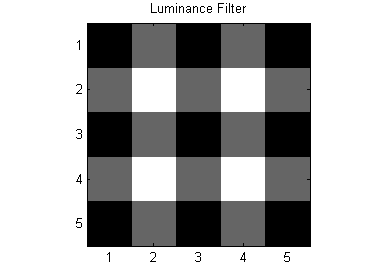 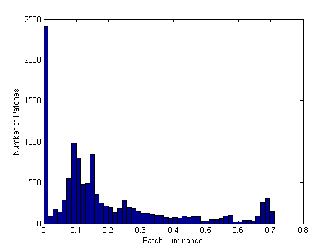
Find closest patch luminance from trained set for each patch
Filters are learned for a predefined set of patch luminance values. For each patch, calculate the patch luminance and find the closest luminance value that was used for training. the patch
%List of patch luminance values used for training patchLuminanceSamples = L3Get(L3,'luminance list') differences = repmat(patchluminances',1,length(patchLuminanceSamples)) - ... repmat(patchLuminanceSamples,length(patchluminances),1); [~,luminanceindex] = min(abs(differences')); figure; hist(patchLuminanceSamples(luminanceindex),50) xlabel('Closest Patch Luminance'); ylabel('Number of Patches') % For rest of this article, just consider the patches that are % closest to the first trained patch luminance value. % Normally all patch types are looped over. ll = 1; currentpatches = find(luminanceindex == ll); %Set current patch luminance index L3 = L3Set(L3,'luminance type',ll); L3 = L3Set(L3,'sensor patches', allPatches(:,currentpatches));
patchLuminanceSamples =
Columns 1 through 6
0.1800 0.3100 0.4400 0.5700 0.7000 0.8300
Columns 7 through 10
0.9600 1.0900 1.2200 1.3500
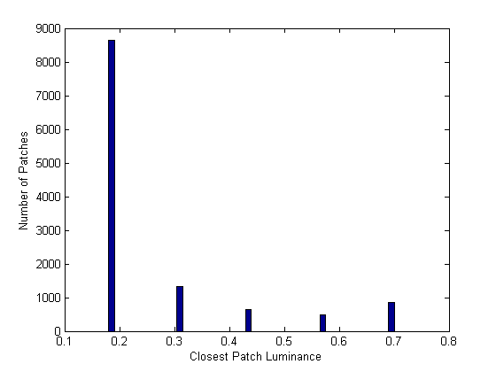 Global Linear Pipeline (simpler alternative to full L^3 pipeline)
The simplest way to run the pipeline is to have a single filter for each patch type and luminance level. We call this the global linear pipeline (which is a bad name). This pipeline is simpler than the full L^3 pipelien and performance is usually only a little worse.
L3plot(L3,'global filter'); subplot(1,3,2) title('Global Pipeline Filters (3 plots are for XYZ)') %Output for global linear pipeline is calculated using a single %multiplication. globalpipelinefilter = L3Get(L3,'global filter'); xhatL3(:,currentpatches) = globalpipelinefilter* L3Get(L3,'sensor patches');
Divide patches into flat and texture
Patches are divided into two groups, flat and texture.
Flat patches come from uniform regions of an image. For a flat patch all measurements of the same color are nearly equal.
Texture patches come from edges or texture regions of an imae. For a texture patch, there is more variation across the patch measurements.
% Following are all implemented by repeated calls to L3Get. Each of % the following steps are calculated for each patch separately.
1. Calculate the mean in each color channel
% means = L3Get(L3,'sensor patch means'); meansFilter = L3Get(L3,'means filter'); patches = L3Get(L3,'sensor patches'); means = meansFilter*patches; L3plot(L3,'mean filter'); subplot(1,4,2) title('Color Channel Means Filters (4 plots are for RGBW)')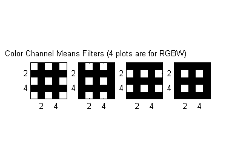
2. Subtract the mean from each pixel with the corresponding color
% patcheszeromean = L3Get(L3,'sensor patch zero mean') blockPattern = L3Get(L3,'block pattern'); patcheszeromean = L3adjustpatchmean(patches,-means,blockPattern);
3. Find patch contrast by summing 0 mean patch with abs value
% contrasts = L3Get(L3,'sensor patch contrasts');
contrasts = mean(abs(patcheszeromean));
4. Compare patch contrast to threshold. If contrast<threshold, patch is flat. If contrast>threshold, patch is texture.
% flatindices = L3Get(L3,'flat indices'); flatThreshold = L3Get(L3,'flat threshold'); flatindices = (flatThreshold >= contrasts);
Apply filters to flat patches
Optimal filters learned for the flat patches are applied to get the output XYZ estimates.
flatfilters = L3Get(L3,'flat filters'); xhatL3(:,currentpatches(flatindices)) = L3applyfilters(L3,flatfilters,flatindices); L3plot(L3,'flat filter'); subplot(1,3,2) title('Filters for Flat Patches (3 plots are for XYZ)')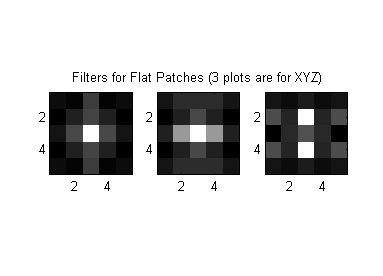
Flip texture patches into canonical form
Since there are significant spatial differences within texture patches, it helps (a little) to decrease the possible variation in the patches. The patches are flipped over the vertical, horizontal, and main diagonal (assuming there is symmetry in the CFA pattern across these directions) so that each flipped texture patch has higher averages in the top, left, and above diagonal halves.
textureindices = find(L3Get(L3,'texture indices')); randompick=ceil(rand(1,25)*size(textureindices,2)/2); %randomly pick 25 selectedtextureindices = textureindices(randompick); L3plotpatches(L3,selectedtextureindices,5,5); title('Some Texture Patches before flip') L3 = L3flippatches(L3); L3plotpatches(L3,selectedtextureindices,5,5); title('Some Texture Patches after flip')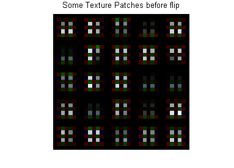 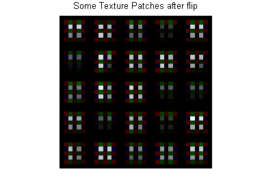
Cluster texture patches
The texture patches can be further subdivided using a hierarchical clustering method. The idea is that by subdividing, similar patches will be grouped together and optimal filters for each cluster will be able to exploit the similar statistics of the patches. This offers only small improvements for general natural scenes.
L3 = L3clustertexturepatches(L3);
Apply filters to texture patches
Optimal filters learned for each cluster of texture patches are applied to get the output XYZ estimates.
texturefilters = L3Get(L3,'texture filters'); clustermembers = L3Get(L3,'cluster members'); treedepth = L3Get(L3,'tree depth'); numclusters = L3Get(L3,'nclusters'); clusterrange = 1:numclusters; %this should probably just be leaves for clusternum = clusterrange %clusterindices is vector of length equal to the number of allPatches, %each entry is 1 for each patch in the current cluster and 0 otherwise clusterindices = ... floor(clustermembers/2^(treedepth-floor(log2(clusternum))-1))==clusternum; xhatL3(:,currentpatches(clusterindices)) = ... L3applyfilters(L3,texturefilters{clusternum},clusterindices); end textureType = 1; L3Plot(L3,'texture filter',[rr,cc],ll,textureType); subplot(1,3,2) title('Filters for all Texture Patches (3 plots are for XYZ)') textureType = 5; L3Plot(L3,'texture filter',[rr,cc],ll,textureType); subplot(1,3,2) title('Filters for 1/4 of Texture Patches (3 plots are for XYZ)')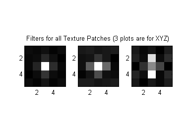 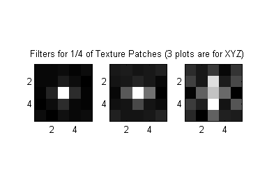
Calculate final output images
Once the above calculations are performed for each patch type and patch luminance (which happens by calling cameraCompute), we can get the final output images.
% Calculate L^3 result [camera, lrgbL3] = cameraCompute(camera,scene); % Calculate global L^3 result camera = cameraSet(camera,'vci name','L3 global'); [camera, lrgbGlobal] = cameraCompute(camera,'sensor');
Show which of the trained patch luminance values used at each pixel
vci = cameraGet(camera,'vci'); L3 = imageGet(vci,'L3'); lumIdx = L3Get(L3,'luminance index'); figure; imagesc(lumIdx); axis image; axis off; colorbar title('Luminance Value Used')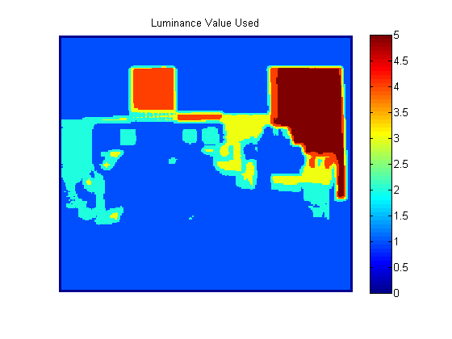
Calculate ideal XYZ image
Following XYZ image is the result that would occur with no noise if we had a sensor that measured the XYZ channels at every pixel.
[camera,xyzIdeal] = cameraCompute(camera,scene,'idealxyz'); xyzIdeal = xyzIdeal/max(xyzIdeal(:)); %scale to full display range figure; image(xyzIdeal); axis image; axis off; title('Ideal XYZ')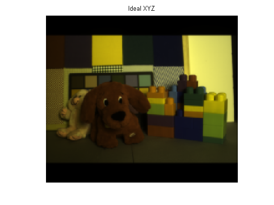
Crop black border from all images
L^3 does not give estimates for pixels near the image border. An estimate is not possible for pixels when there is not enough room to fit a patch.
xyzIdeal = L3imcrop(L3,xyzIdeal); lrgbL3 = L3imcrop(L3,lrgbL3); lrgbGlobal = L3imcrop(L3,lrgbGlobal);
Scale lrgb result images
To achieve consistent appearance for display, the result images are scaled so they have the same mean as the lrgbIdeal image. This is more consistent across the images than scaling each independently to achieve a maximum value of 1.
[srgbIdeal, lrgbIdeal] = xyz2srgb(xyzIdeal); lrgbL3 = lrgbL3 * mean(lrgbIdeal(:)) / mean(lrgbL3(:)); lrgbGlobal = lrgbGlobal * mean(lrgbIdeal(:)) / mean(lrgbGlobal(:));
Convert lrgb to srgb
srgbL3 = lrgb2srgb(ieClip(lrgbL3,0,1)); srgbGlobal = lrgb2srgb(ieClip(lrgbGlobal,0,1));
Show the sRGB results
vcNewGraphWin; imagesc(srgbIdeal); axis image title('Ideal') vcNewGraphWin; imagesc(srgbL3); axis image title('L3') vcNewGraphWin; imagesc(srgbGlobal); axis image title('L3 Global')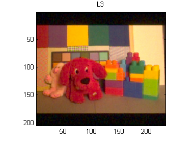

Default ISET pipeline result
Following is the default pipeline in ISET. The settings and scaling are probably not set up properly.
camera = cameraSet(camera,'vci name','default'); [camera, lrgbbilinear] = cameraCompute(camera,'sensor'); %Crop image to compare with other cropped images lrgbbilinear = L3imcrop(L3,lrgbbilinear); % Scale and convert to srgb lrgbbilinear = lrgbbilinear * mean(lrgbIdeal(:)) / mean(lrgbbilinear(:)); srgbbilinear = lrgb2srgb(ieClip(lrgbbilinear,0,1)); vcNewGraphWin; imagesc(srgbbilinear); axis image title('Default pipeline')